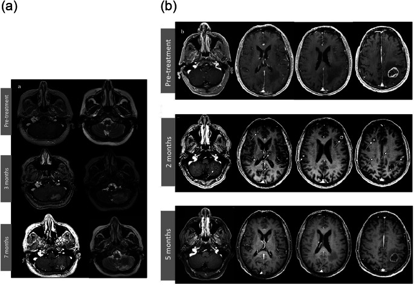
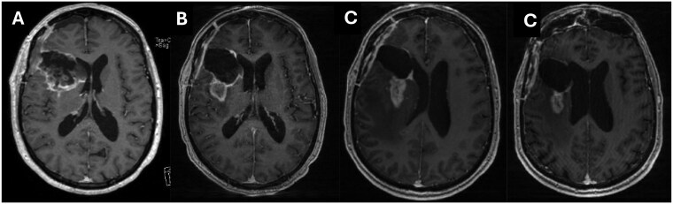

3003 — Ức chế điểm kiểm soát miễn dịch ở u não CMMRD/MMR-deficient: chọn bệnh nhân, phác đồ, độc tính & cách đọc đáp ứng trên MRI
Tags: pattern:u-nao pattern:gia-tien-trien pattern:dap-ung-muon vung:nao score:iRANO score:RANO-2.0 protocol:MRI-nao-doi-quang protocol:ICI
Mức chắc chắn (certainty): tổng hợp y văn (literature synthesis) — ghép ba tầng nguồn: (a) tổng quan quản lý CMMRD của hai consortium IRRDC/C4CMMRD, Fam Cancer 2026 (PMC13303765, CC BY 4.0); (b) hệ thống 40 nghiên cứu ICI ở u não nhi, J Neurooncol 2026 (PMC13179885, CC BY 4.0); (c) dữ liệu bộ gen CMMRD-HGG, iScience 2026 (PMC12964222, CC BY 4.0) + hai nghiên cứu giả tiến triển đối chọi nhau (PMC12263762, PMC12850524, CC BY 4.0). Không có ca nguyên văn riêng của nhóm; mọi số liệu giữ nguyên từ bài gốc.
Bài này trả lời câu hỏi thực hành của bác sĩ CĐHA: khi một trẻ CMMRD được truyền nivolumab/pembrolizumab, ai thực sự đáp ứng, và tại sao "u to lên" trên MRI tháng thứ 2 KHÔNG đồng nghĩa thất bại? Bài nền về bệnh học và lịch tầm soát là 690 – CMMRD; bài này không lặp lại phần tầm soát, chỉ phủ phần điều trị miễn dịch + đọc đáp ứng.
1. Tổng quan — vì sao u CMMRD "nóng" với ICI, và vì sao MRI không nhìn thấy đáp ứng
- Bệnh học: CMMRD do đột biến lưỡng alen (biallelic) gen sửa chữa lệch (mismatch repair — MLH1/MSH2/MSH6/PMS2) → sai sót lặp vi vệ tinh không được sửa → hypermutation. U não là ung thư hay gặp nhất và là nguyên nhân tử vong chính; ung thư mới trung bình mỗi ~2 năm (PMC13303765).
- Ngưỡng định lượng quyết định "ai đáp ứng" — gánh nặng đột biến (tumour mutational burden, TMB):
- Trong 25 u thần kinh đệm bậc cao CMMRD, TMB trung bình 159,1 ± 170,2 đột biến/Mb; 94,4% đạt ngưỡng hypermutation (> 10/Mb) và 17/18 (94,4%) đạt ultra-hypermutation (> 100/Mb); u có thêm đột biến POLD1 somatic còn cao hơn (310,6 ± 157,0/Mb) (PMC12964222).
- Ngưỡng tuyển bệnh nhân của thử nghiệm nhi khoa là MMR-deficiency và/hoặc TMB ≥ 5 đột biến/Mb (NCT02992964, dẫn trong PMC13303765).
- So sánh: u não nhi không chọn biomarker có TMB thấp, tế bào lympho xâm nhập ít ("cold") → ORR ≤ 6%, PFS 1–3 tháng (PMC13179885).
- TẠI SAO đáp ứng không thấy được bằng hình thái: TMB cao → nhiều neoantigen → lympho T xâm nhập u → viêm tại chỗ. Trên MRI, ngấm thuốc chỉ phản ánh hàng rào máu–não (BBB) bị phá vỡ, còn T2/FLAIR phản ánh nước (phù) — không phải mật độ tế bào u. Vì vậy cả đáp ứng lẫn giả tiến triển đều có thể làm ngấm thuốc tăng: viêm do lympho + phù quanh u trông giống hệt u tiến triển. Đó là lý do phải dùng tiêu chuẩn đáp ứng miễn dịch (iRANO), không dùng RECIST/RANO thuần.
- Cơ chế giả tiến triển (pseudoprogression, PsP) sau ICI: thâm nhiễm lympho T + phù do cytokine làm tăng thể tích biểu kiến rồi tự thoái triển khi viêm lắng; không có tăng sinh tế bào u. Khác PsP sau hóa–xạ: sau hóa–xạ là tổn thương mạch/hoại tử, sau ICI là viêm miễn dịch (PMC13589733).
- Ngưỡng thời gian nằm lòng: cửa sổ PsP sau ICI là trong 6 tháng đầu (hiếm khi muộn hơn); đáp ứng có thể xuất hiện MUỘN — trong thử nghiệm hypermutant nhi, ORR ban đầu 20% nhưng đáp ứng tốt nhất sau điều trị (iBOR) 50%, tức một nửa đáp ứng chỉ hiện ra sau khi đã "tiến triển" trên phim (PMC13179885).
2. Mẫu hình + chẩn đoán phân biệt theo bậc thang sinh học (Gamut)
Câu hỏi lọc: "U này có thiếu hụt sửa chữa lệch/hypermutation thật không — và đang ở dòng điều trị thứ mấy?" — sinh học quyết định đáp ứng, không phải mô học.
- Bậc 1 — CMMRD (MMR lưỡng alen, germline): đáp ứng cao nhất. Registry IRRDC (38 bệnh nhân, 31 u CNS): nivolumab hoặc pembrolizumab cho ORR 64% ở u CNS, 100% ở u đặc ngoài CNS, 0% ở u huyết học; sống còn ở nhóm CNS tái phát/tiến triển 39,3% (KTC 95%: 36,3–42,3); TMB cao và MSI là yếu tố tiên đoán độc lập (PMC13303765).
- Bậc 2 — thiếu hụt replication-repair khác (POLE/POLD1) và u siêu đột biến: thử nghiệm hypermutant nhi (nivolumab 3 mg/kg mỗi 2 tuần): iBOR 50%, sống còn toàn bộ 2 năm ~50%, đáp ứng tập trung ở ultra-hypermutant/MSI-indel cao (PMC13179885).
- Bậc 3 — "MSI-H" đơn thuần ở u não nhi: KEYNOTE-051 (n = 7; 6 u CNS): ORR 0% (KTC 95%: 0–41), DCR 14%, PFS 1,7 tháng, OS 7,7 tháng — nhưng 1 ca GBM đạt đáp ứng hoàn toàn muộn sau tiến triển ban đầu, duy trì đến chu kỳ 20 (PMC13179885). Bài học: nhãn "MSI-H" không bảo đảm hành vi như ung thư đại tràng người lớn.
- Bậc 4 — không chọn biomarker: u thần kinh đệm cầu não lan tỏa (DIPG), HGG tái phát, medulloblastoma, ependymoma: PFS 1,4–1,7 tháng, không khác chứng lịch sử; độc tính grade ≥ 3: 14,1% (nivolumab) vs 27,2% (nivolumab + ipilimumab) (CheckMate-908, dẫn trong PMC13179885).
- Mnemonic 4 câu hỏi: TMB (≥ 5 → > 10 → > 100/Mb) · MSI/indel signature · Germline (CMMRD/Lynch?) · Timing (dòng điều trị sớm hay đã thất bại nhiều dòng).
3. Bảng so sánh phân biệt (ma trận đối chiếu)
| Thực thể (entity) | Hình ảnh / bối cảnh điển hình | Chốt vào (rule-in) | Chốt loại (rule-out) | Gợi ý xác nhận |
|---|---|---|---|---|
| CMMRD-HGG đáp ứng ICI | U não trẻ, nhiều ổ hoặc tái phát sớm; trên MRI ngấm thuốc tăng rồi giảm, có thể xuất hiện tổn thương mới thoáng qua | Germline MMR lưỡng alen + TMB > 100/Mb + tổn thương mới/ngấm tăng trong 6 tháng đầu rồi thoái triển KHÔNG đổi điều trị | Tăng liên tục ≥ 3 tháng kèm suy lâm sàng → tiến triển thật | iRANO: chụp xác nhận ≥ 3 tháng sau lần "tiến triển" đầu |
| Hypermutant/POLE-POLD1 (không CMMRD) | Khối đơn ổ, trẻ lớn/người trẻ; TMB cao nhưng không có bệnh cảnh đa polyp/café-au-lait | TMB > 10/Mb + signature POLE/POLD1 + đáp ứng muộn (iBOR > ORR ban đầu) | TMB thấp + không xâm nhập lympho → không chỉ định | NGS tumor–normal (TMB, MSI, signature) |
| GBM người lớn không chọn biomarker | Khối hoại tử trung tâm, ngấm vòng; PsP sau hóa–xạ trong 12 tuần đầu | PsP sau hóa–xạ: ngấm tăng ≤ 12 tuần rồi giảm, không đổi điều trị | PsP do ICI đơn thuần: rất hiếm — 55 bệnh nhân GBM, 0 ca PsP do ICI đơn trị (PMC12850524) | DSC-MRI: rCBV tăng → tiến triển; thấp → hoại tử/xạ |
| U não nhi "MSI-H" nhưng không hypermutant | Tổn thương đơn ổ, không đặc hiệu | MSI-H + TMB thấp + không có germline MMRD | ORR 0%, PFS 1,7 tháng → không hứa hẹn với gia đình | Đối chiếu TMB tuyệt đối, không chỉ nhãn MSI |
| U huyết học CNS (lymphoma thứ phát) | Ngấm đồng nhất quanh não thất, hạn chế khuếch tán | Xác định bằng mô bệnh + dòng tế bào | 0% đáp ứng ICI trong registry CMMRD → ưu tiên hóa trị như lymphoma thường | Sinh thiết/mô bệnh, immunophenotype |

(a) Tổn thương di căn tiểu não trái: T1 sau tiêm + T2 trước điều trị, sau 3 tháng ICI (ngấm thuốc và phù TĂNG), sau 7 tháng (tự cải thiện, không đổi phác đồ). (b) Tổn thương di căn đỉnh trái: trước điều trị, sau 2 tháng (nhiều ổ mới rải rác — mũi tên trắng), sau 5 tháng (các ổ mới BIẾN MẤT). Nguồn: J Neurooncol 2025 (PMC12263762), CC BY 4.0; ảnh nguyên bản, không crop.4. Protocol chụp + hệ đáp ứng iRANO/RANO 2.0
4.1 Protocol MRI theo dõi ICI ở u não
| Thời điểm | Chuỗi xung bắt buộc | Ngưỡng / lý do |
|---|---|---|
| Trước liều đầu (baseline) | T1 sau tiêm 1 mm 3D, T2/FLAIR, DWI/ADC, DSC (nếu có) | Baseline trong 1–2 tuần trước liều 1; không dùng phim sau mổ còn máu tụ làm mốc |
| Mỗi 8–12 tuần | Như trên + cùng liều thuốc cản quang, cùng máy, cùng mặt phẳng | So sánh thể tích, không so đường kính đơn thuần |
| Khi nghi "tiến triển" < 6 tháng | Lặp lại ≥ 3 tháng sau (hoặc sớm hơn nếu lâm sàng xấu) | Đây chính là định nghĩa thực hành của iRANO |
| Sau 6 tháng | RANO 2.0 thường quy | PsP muộn rất hiếm; tiến triển thật phải xử trí như u |
4.2 Bậc thang quyết định (Mermaid)
flowchart TD
A[U nao MMR-deficient duoi ICI] --> B{Co germline CMMRD hoac TMB lon hon 100 tren Mb?}
B -->|Co| C[Uu tien ICI som, phoi hop xa tri khi can]
B -->|Khong| D{TMB lon hon 10 hoac MSI-indel cao?}
D -->|Co| C
D -->|Khong| E[Khong dua ICI vao phac do dac tri; uu tien chuan]
C --> F{MRI moi ngam thuoc tang trong 6 thang dau?}
F -->|Khong| G[Dap ung on dinh: tiep tuc, chup 8-12 tuan]
F -->|Co| H{Benh nhan lam sang on dinh?}
H -->|On dinh| I[Gia tien trien nghi ngo: TIEP TUC ICI, chup xac nhan 3 thang]
H -->|Xau di ro| J[Danh gia lai: sinh thiet neu lam duoc, khong tu dong dung thuoc]
I --> K{Phim xac nhan 3 thang}
K -->|Giam hoac on dinh| G
K -->|Tang them| L[Tien trien that: doi phac do]
4.3 Liều & an toàn (số liệu từ thử nghiệm nhi)
- Nivolumab 3 mg/kg TM mỗi 2 tuần (liều khuyến cáo pha 2 ở trẻ, không có DLT khi xác nhận liều) — dẫn trong PMC13179885.
- Pembrolizumab 2 mg/kg (tối đa 200 mg) mỗi 3 tuần, tối đa 35 chu kỳ (KEYNOTE-051) — dẫn trong PMC13179885.
- Độc tính: grade ≥ 3 14,1% (nivolumab đơn trị) và 27,2% (phối hợp ipilimumab); không có tử vong do điều trị trong các cohort nhi (PMC13179885). Thực hành thực tế: irAE 44%, grade ≥ 3 ~20%, irAE liên quan tới PFS/OS tốt hơn (aHR 0,35 và 0,33) — tức irAE không phải lý do ngừng sớm nếu kiểm soát được.
- irAE nội sọ hay gặp nhất: viêm tuyến yên (hypophysitis) — tuyến yên to thoáng qua, ngấm đều, cuống tuyến yên dày nhẹ, hố yên không giãn; đặc trưng với ipilimumab là giảm ngấm vùng trước tuyến yên + T2 giảm tín hiệu (xơ hóa) (PMC13589733). Phải so baseline, kẻo bỏ sót.
- Nguyên tắc điều trị CMMRD (ERN GENTURIS–C4CMMRD): u thần kinh đệm bậc thấp → mổ; HGG → TRÁNH temozolomide (không hiệu quả trong bối cảnh MMR mất, chỉ tăng đột biến) và dùng miễn dịch; xạ trị không chống chỉ định; ghép tế bào gốc đồng loài làm phức tạp ICI về sau → phải bàn trong nhóm chuyên gia (PMC13303765).
5. Biến thể bình thường và cạm bẫy
- Cạm bẫy 1 — quy công sai cho thuốc: hình "ngấm tăng rồi giảm" sau hóa–xạ + ICI thường là giả tiến triển do xạ, không phải do ICI. Trong 55 bệnh nhân GBM, không có ca PsP nào do ICI đơn trị; ca minh họa dưới đây là PsP sau xạ + durvalumab (PMC12850524). → Muốn quy cho ICI phải có thay đổi ngoài trường xạ hoặc tổn thương mới ở nơi chưa xạ.
- Cạm bẫy 2 — PsP có triệu chứng: iRANO gợi ý loại trừ PsP khi bệnh nhân có khiếm khuyết thần kinh mới; nhưng trong 102 bệnh nhân người lớn, 9,8% có PsP và 40% trong số đó CÓ triệu chứng, tất cả đều cải thiện với corticoid (PMC12263762). → Triệu chứng không tự động loại trừ PsP — nhưng phải loại trừ chèn ép/giãn não thất cấp.
- Cạm bẫy 3 — "đáp ứng giả" do corticoid/bevacizumab: giảm ngấm thuốc nhanh sau corticoid là hiệu ứng hàng rào máu–não, không phải u nhỏ đi. Ghi rõ liều corticoid mỗi lần chụp.
- Cạm bẫy 4 — co giật: ngấm thuốc vỏ não/khoang dưới nhện thoáng qua sau cơn động kinh tự hết khi kiểm soát co giật (PMC13589733) — đừng đọc là di căn màng não.
- Cạm bẫy 5 — tăng sinh nhanh (hyperprogression): một số u tăng tốc sau liều ICI đầu; phân biệt với PsP bằng thời gian nhân đôi thể tích và suy lâm sàng, không bằng một lần chụp.
- Cạm bẫy 6 — phản biện từ dữ liệu thật: trong 8 trẻ CMMRD tái phát HGG ở Paris, ICI thất bại: tiến triển trong 2 tháng, 6/8 tử vong, trung vị 5,2 tháng sau bắt đầu ICI (PMC13303765). → Đáp ứng 64% của registry IRRDC không tái lập được ở mọi bối cảnh — khác biệt lớn nhất là thời điểm dùng (sớm, ít dòng điều trị, u nhỏ) và gánh nặng u. Đừng hứa hẹn với gia đình dựa trên con số 64%.
6. Tự lượng giá — Blind Quiz
Ca 1 — Trẻ 11 tuổi CMMRD (MSH6 lưỡng alen), GBM tái phát đang nivolumab. Nhìn 2 mốc thời gian ở hàng (b), mô tả trước khi đọc đáp án:
- Câu hỏi: Tổn thương thay đổi thế nào từ mốc 1 → 2 → 3? Nếu chỉ có phim tháng thứ 2, bạn sẽ kết luận gì? Dấu hiệu nào trên phim không cho phép phân biệt?
Bấm để hiện đáp án (findings + chẩn đoán)
- Findings: hàng (a) tiểu não trái — ngấm thuốc + phù T2 tăng ở tháng 3, giảm rõ ở tháng 7. Hàng (b) đỉnh trái — nhiều ổ ngấm thuốc MỚI ở tháng 2 (mũi tên trắng), biến mất ở tháng 5.
- Chẩn đoán: giả tiến triển do ICI — không đổi phác đồ, tổn thương tự thoái triển.
- Vì sao không phân biệt được bằng hình thái: ngấm thuốc = rò rỉ hàng rào máu–não; T2/FLAIR = nước. Cả viêm miễn dịch lẫn u tiến triển đều làm hai thứ này tăng → phải dùng thời gian + iRANO.
- Phản biện (bắt buộc): nếu bệnh nhân này đã xạ trị vào vùng đó, PsP có thể do xạ; bằng chứng quy cho ICI chỉ mạnh khi tổn thương mới ngoài trường xạ như hàng (b).
- Nguồn ảnh: J Neurooncol 2025 (PMC12263762), CC BY 4.0.
Ca 2 — Người lớn GBM mới chẩn đoán, sau mổ + hóa–xạ đồng thời với durvalumab (ICI). So sánh 4 mốc A→D:

- Câu hỏi: "U to ra" ở B–C là tiến triển hay giả tiến triển? Yếu tố nào quyết định cách gọi tên? Vì sao không được ghi "giả tiến triển do ICI"?
Bấm để hiện đáp án (findings + chẩn đoán)
- Findings: (A) trước hóa–xạ + ICI; (B) 2 tháng sau kết thúc — ngấm nốt tăng; (C) 2,5 tháng — tăng thêm; (D) 4 tháng — giảm, không đổi điều trị.
- Chẩn đoán: giả tiến triển sau hóa–xạ (thời điểm ≤ 12 tuần sau xạ là cửa sổ kinh điển). Vì có xạ đồng thời, không được quy cho ICI.
- Vì sao quan trọng: chính vì bẫy này mà nghiên cứu 55 bệnh nhân GBM kết luận không có PsP do ICI đơn trị — nghĩa là "PsP do ICI" ở GBM thường là do xạ được quy nhầm (PMC12850524).
- Ngưỡng: PsP sau hóa–xạ hầu như trong 12 tuần sau xạ; PsP do ICI trong 6 tháng sau liều đầu.
- Nguồn ảnh: Neuro-Oncology Advances 2026 (PMC12850524), CC BY 4.0.
Ca 3 — Trẻ 8 tuổi, u nguyên bào thần kinh đệm MSI-H nhưng TMB 3,2 đột biến/Mb, gia đình hỏi "cho cháu miễn dịch được không?"
Bấm để hiện đáp án
- Trả lời: không nên hứa hẹn. Cohort nhi MSI-H của KEYNOTE-051: ORR 0%, DCR 14%, PFS 1,7 tháng, OS 7,7 tháng; chỉ 1 ca GBM đáp ứng muộn kéo dài (PMC13179885).
- Lý do sinh học: "MSI-H" là nhãn chẩn đoán phân tử, không phải nhãn sinh học miễn dịch — thiếu ultra-hypermutation (> 100/Mb) và thiếu xâm nhập lympho thì không sinh neoantigen đủ mạnh.
- Việc phải làm: xác nhận TMB tuyệt đối + signature + MMR germline trước khi bàn ICI; nếu âm → điều trị chuẩn, không trì hoãn.
Bài liên quan chéo
- 690 – CMMRD: u não, đa polyp, café-au-lait & lịch tầm soát — bài nền về bệnh học và tầm soát
- 200 – Tổng quan hệ Thần kinh — bảng DDx theo vùng
- 213 – U não — tiếp cận khối u trong trục, ngấm thuốc/hoại tử
- 201 – Protocol sọ não — chuỗi xung và liều cản quang
- 241 – HR-VWMI đọc ngấm thành mạch — kỹ thuật phân giải cao cho thành mạch
- 242 – PACNS: duy trì & theo dõi — ví dụ khác về "điều trị miễn dịch + theo dõi hình ảnh"
Không dùng để chẩn đoán độc lập khi chưa có người hướng dẫn. Quyết định dùng/ngừng ICI và xử trí irAE thuộc nhóm đa chuyên khoa (nhi – ung thư – thần kinh – nội tiết).